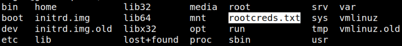
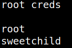
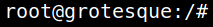

5.1 Getting the last flag
1. Go to “/” directory.
angel@grotesque:~$cd /
angel@grotesque:~$ls
angel@grotesque:~$ls
Output:

A new file “rootcreds.txt” has been created.
2. Show the file.
angel@grotesque:/$cat rootcreds.txt
The file contains the “root” credentials.
Output:

3. Log in as “root”.
angel@grotesque:/$su root
Output:
